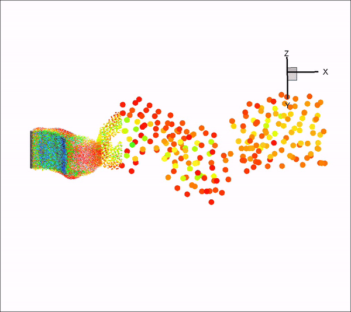
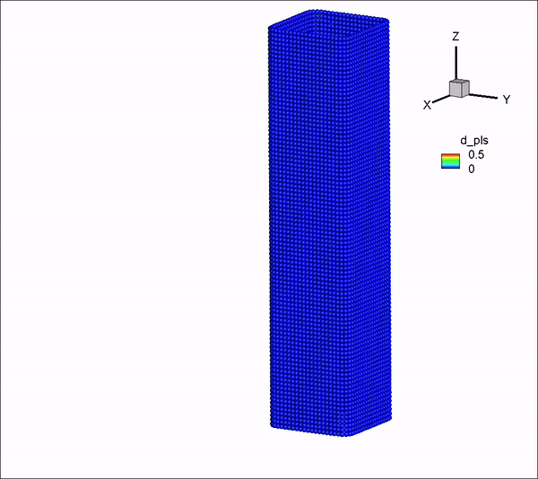
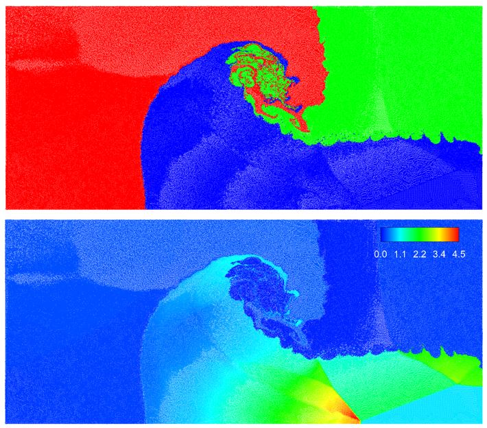
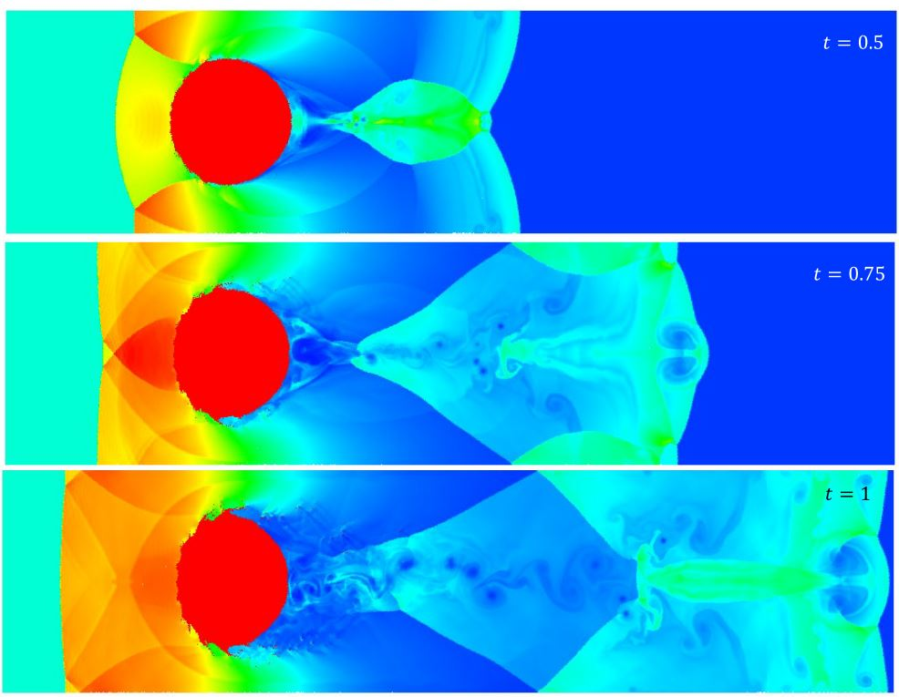

Research
Particle-Grid Methods
Developing Particle-Grid Discontinuous Galerkin method for weakly and strongly compressible flows.
Fluid-Structure Interaction
Numerical frameworks for coupled fluid and structural dynamics, including thin structures, moving interfaces, and large deformation.
Thin Shell Solver
Numerical frameworks for thin shell structures based on meshless methods, including semi-meshless FV method and MPM.
Multi-resolution Meshless Methods
Developing efficient and accurate Multi-resolution for SPH, especially for FSI problems.
Coupling Between Different Methods
Developing algorithms for new methods coupling meshless and mesh-based approaches.
Multiphysics & Complex Flows
Methods for free-surface flow, multiphase flow, high-Reynolds-number flow, weakly/strongly compressible flow, and high-performance scientific computing at large scales.
High-order methods
Developing high-order-accuracy method for SPH simulations.
Research Gallery
Selected numerical simulations are conducted using SPH, FVM, MPM, PG-DG.



